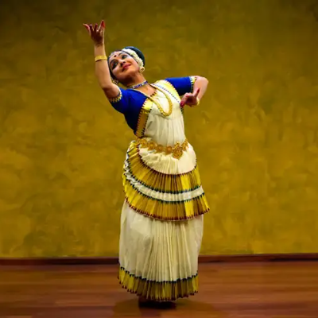
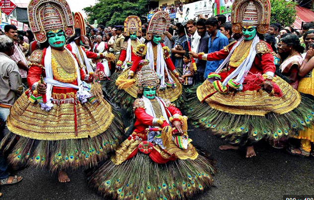

Kerala, known as “God’s Own Country”, is one of India’s most beautiful states, famous for its backwaters, lush greenery, beaches, and traditional art forms like Kathakali and Mohiniyattam. The serene houseboats, spice plantations, and Ayurveda traditions make Kerala a true paradise for travelers.

